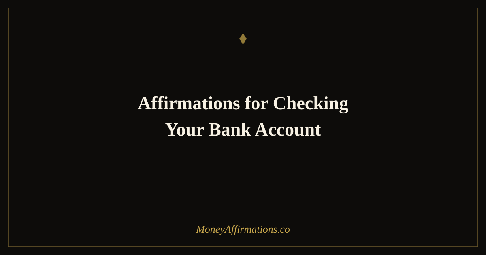

50 Affirmations for Checking Your Bank Account Without Dread or Avoidance

For many people, the moment before opening a banking app is one of the most quietly dreaded moments of the day. The number on the screen feels like a grade — a judgment on how well or how poorly they are managing their life. That response is not a character flaw. It is a learned pattern, often rooted in years of financial stress, scarcity messaging, or simply never having been taught that money is something you can look at calmly.
These 50 affirmations are organized as a journey through the actual experience of checking your account — from the moment before you open the app, through the act of looking at the numbers, into what you choose to do after. They are designed to help you build a new relationship with financial reality: one grounded in clarity, self-compassion, and forward momentum rather than avoidance and shame.
For many people, checking a bank account triggers a physical response — tightness, dread, a held breath. This page treats that response seriously. Move through each group in sequence, or use whichever phase matches where you are right now.
What are affirmations for checking your bank account?
Affirmations for checking your bank account are short, present-tense statements that reframe your relationship with the act of looking at your financial reality. Unlike generic money affirmations focused on attracting wealth, these are specifically designed to address the anxiety response that many people experience around financial monitoring. They work by interrupting the threat-detection loop that fires before you open your banking app and replacing it with a signal of safety and curiosity. Over time, repeated use rewires the emotional association between "seeing my balance" and "feeling fear" — shifting it toward calm, informed engagement. The result is that you check more often, you hide less, and you make better decisions because you are working from accurate information rather than avoidance.
50 affirmations for checking your bank account
Before you open the app — calm your nervous system
- I take a slow breath before I open my banking app, and I am ready to look clearly.
- I am safe. My bank balance is information, not a verdict.
- I have the emotional capacity to see my financial reality as it is right now.
- Checking my account is an act of financial courage and self-respect.
- My body can relax — I am just looking at numbers, and numbers cannot hurt me.
- I am stronger than my financial anxiety, and I choose to look anyway.
- Whatever I see on this screen, I am capable of handling it with wisdom and calm.
- I release the idea that not looking protects me. Awareness protects me.
- I am someone who faces their finances directly, and that makes me powerful.
- In this moment, before I look, I remind myself: I am okay, and I will be okay after I look.
As you look at the numbers — non-judgmental seeing
- I am looking at this number with curiosity, not with shame.
- This balance is information about where I am today — not a measure of my worth.
- I see these numbers clearly and I accept this as my current starting point.
- I am present with this information. I am not running from it.
- Numbers are neutral. I choose what meaning I give them.
- I notice what I feel as I look, and I allow that feeling without judgment.
- I am an adult who can handle financial reality with maturity and grace.
- Looking at my account regularly is one of the most loving things I do for my future self.
- I see all of it — the income, the spending, the balance — and I breathe through it all.
- This moment of looking is progress. Most people look away. I choose to stay present.
When the balance is lower than you hoped
- A lower balance is a signal to respond, not a reason to spiral.
- I have been in tight spots before and I have found my way through every single one.
- Seeing this clearly is the first step to changing it. I am already doing the hard part.
- I do not shame myself for where I am. I focus on my next right financial move.
- This balance reflects past decisions. My next decisions start right now, in this moment.
- I am grateful to know the truth of my situation so I can act with intention.
- Money flows and sometimes it is lower. I trust my ability to earn, save, and grow.
- I respond to this number from a place of calm strategy, not fear or panic.
- Every person who has ever built financial stability has stood in this exact place. I belong here too.
- I am not behind. I am exactly where I need to be to learn what I need to learn.
When the balance feels good — receive and expand
- I allow myself to feel genuinely good when I see a healthy balance. I earned this.
- This number is evidence that my efforts, my habits, and my intentions are working.
- I receive this positive financial moment with gratitude and without diminishing it.
- I notice how it feels to see abundance in my account, and I let that feeling anchor me.
- Money loves to stay where it is welcomed. I welcome it fully and without apology.
- This balance is a foundation I am building on, and it grows stronger every day.
- I am proud of myself for the financial decisions that led to this moment.
- Good news in my account is real. I do not minimize it or wait for it to disappear.
- I am becoming someone who expects financial stability because I have built it consistently.
- I celebrate this moment and I use the energy of it to inspire my next financial choice.
After checking — what you choose to do next
- I have looked. I am informed. Now I move forward with clarity and intention.
- I take one small, positive action based on what I just saw in my account.
- I close this app feeling more empowered than when I opened it.
- I reward myself for checking. This habit is building my financial confidence every time.
- Knowing my number gives me power. I am no longer afraid of the truth of my finances.
- I am building a practice of financial awareness that will serve me for the rest of my life.
- I make better financial decisions because I check regularly. This habit is protecting my future.
- Whatever I saw today, I will look again tomorrow — with the same calm, the same compassion.
- I am creating a new relationship with money, one check-in at a time.
- I am a financially aware, emotionally grounded person who faces their money with courage and care.
How to use these affirmations
The most effective way to use this list is to work through the groups sequentially in the minutes surrounding your account check. Start with the first group while your app is still closed — read two or three affirmations aloud or silently, and let your nervous system register that you are safe before you look. Then move through the relevant middle group depending on what you find. End with the final group after you close the app to anchor the experience as something positive rather than something to escape.
If the idea of reading affirmations every time you check your account feels like too much, start simpler: pick one single affirmation from the first group and say it out loud before opening the app each day for two weeks. The ritual itself — any small act of intentional pause — begins to interrupt the dread response. Over time, add more as the habit settles in.
Consistency is more important than perfection here. Even checking your account with mild anxiety while saying one affirmation is far better than not checking at all. The goal is gradual reduction of avoidance, not the instant elimination of all financial stress.
Financial avoidance and the ostrich effect — why not looking makes things worse
In behavioral finance, the "ostrich effect" describes a documented phenomenon in which people literally reduce how often they look at financial accounts when they expect bad news. The name comes from the mythologized image of an ostrich burying its head in sand — and the research is striking in how universal it is. Studies by Galai and Sade found that investors checked their portfolios significantly less often during market downturns than during growth periods. The same pattern plays out in everyday banking: people facing financial difficulty often stop monitoring accounts entirely, which makes their situation worse, not better.
The mechanism is straightforward. When the brain anticipates a threat — and a low bank balance is processed as a threat — the amygdala fires and the instinct is to avoid the source of the threat. Avoidance reduces the immediate discomfort of knowing, but it does not reduce the underlying problem. In fact, it compounds it, because unmonitored spending continues, unexpected charges go unnoticed, and the person loses the ability to course-correct in real time.
The research on financial monitoring points strongly in the other direction. People who check their accounts regularly — daily or several times per week — consistently report less financial anxiety over time, not more. They also save more and carry less high-interest debt. The very act of regular, calm monitoring builds a sense of financial agency: you are not being acted upon by mysterious forces, you are an active observer of your own financial story, and you can respond to what you see.
From a nervous system perspective, the goal is to keep financial check-ins within the "window of tolerance" — the zone where your nervous system can process information without going into fight, flight, or freeze. Affirmations, breathing, and pre-check rituals all serve this function. They are not magic; they are tools for regulating the stress response so that you can look clearly.
Tips to make them work faster
- Pair with a ritual: Attach your account check to something calming — a morning coffee, a few deep breaths, or a walk to your desk. Paired rituals build consistency faster than willpower alone.
- Set a daily alarm: Choose the same time each day to check your account and label the alarm something affirming like "Financial clarity" rather than "Check bank." The label shapes how your brain approaches the task.
- Write the number down: Keeping a simple log — even a notes app entry with today's balance — turns checking into an act of record-keeping rather than judgment. Tracking normalizes the act.
- Start with one minute: If full-account review feels overwhelming, commit to opening the app and looking at only your checking balance for sixty seconds. Short, successful exposures reduce the dread faster than forcing longer sessions.
- Celebrate the act, not the number: After every check, acknowledge that you did it. The behavior of looking is what you are rewarding — not the result. This builds the habit regardless of what the balance says.
Frequently asked questions
Is it normal to feel physically anxious before checking my bank account?
Yes, it is completely normal. Financial anxiety triggers a genuine physiological stress response — tightened chest, shallow breathing, a racing heart. Research confirms this is one of the most common forms of financial avoidance. The physical sensation is real, and the affirmations on this page are designed to work with that response, not around it.
How often should I check my bank account?
Studies consistently show that people who check their accounts more frequently — daily or a few times per week — save more money and carry less debt than those who check infrequently. Once a day is a healthy rhythm for most people. The goal is to make it a calm, routine act rather than an event loaded with dread.
What if checking always brings bad news?
The affirmations in the third group — "When the balance is lower than you hoped" — are written specifically for this. Seeing an uncomfortable number is information, not a verdict on your worth. The goal is to build the capacity to look at hard information clearly so you can respond with intention rather than spiral into avoidance or shame.
If financial anxiety runs deeper than account-checking dread, explore our full money affirmations collection for support across the wider spectrum of money mindset work — from abundance and earning confidence to debt and financial boundaries.